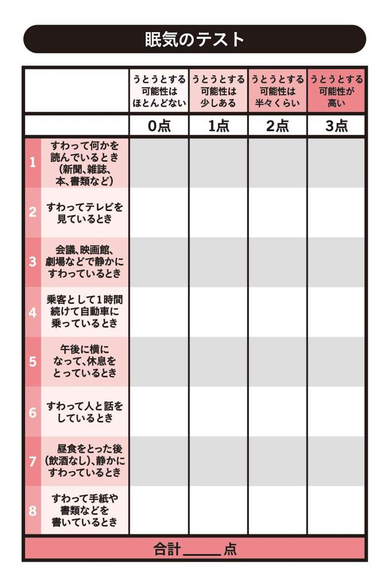
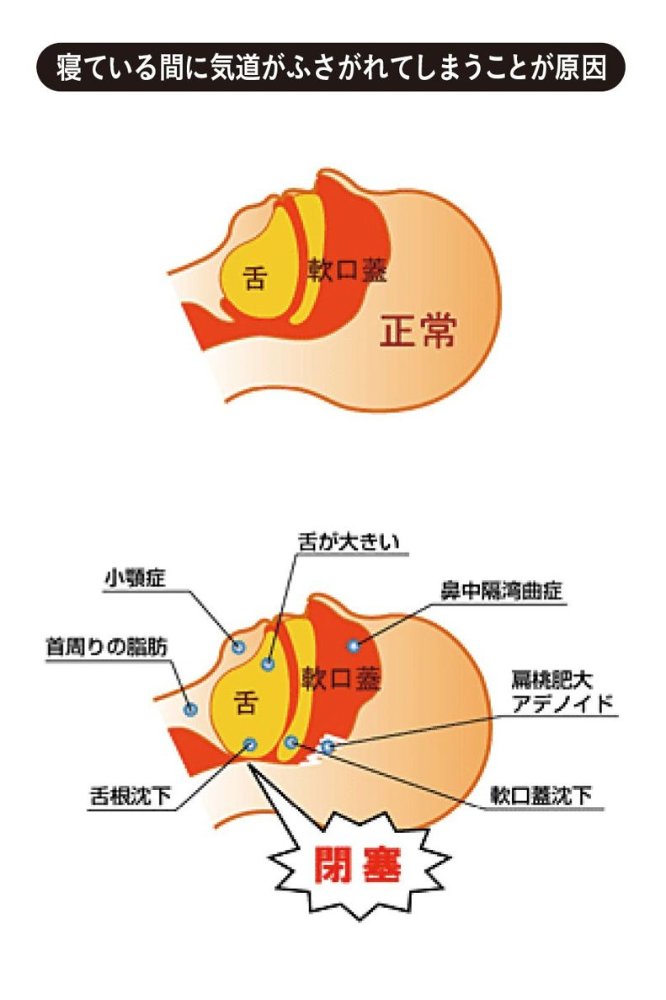
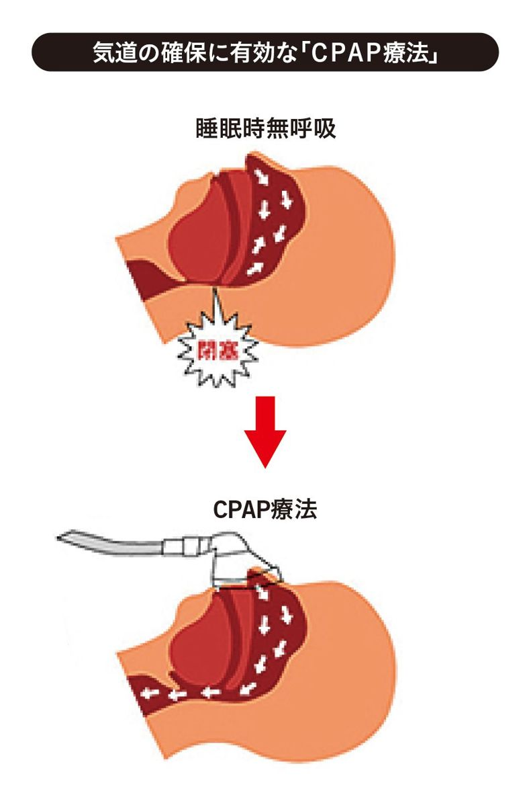
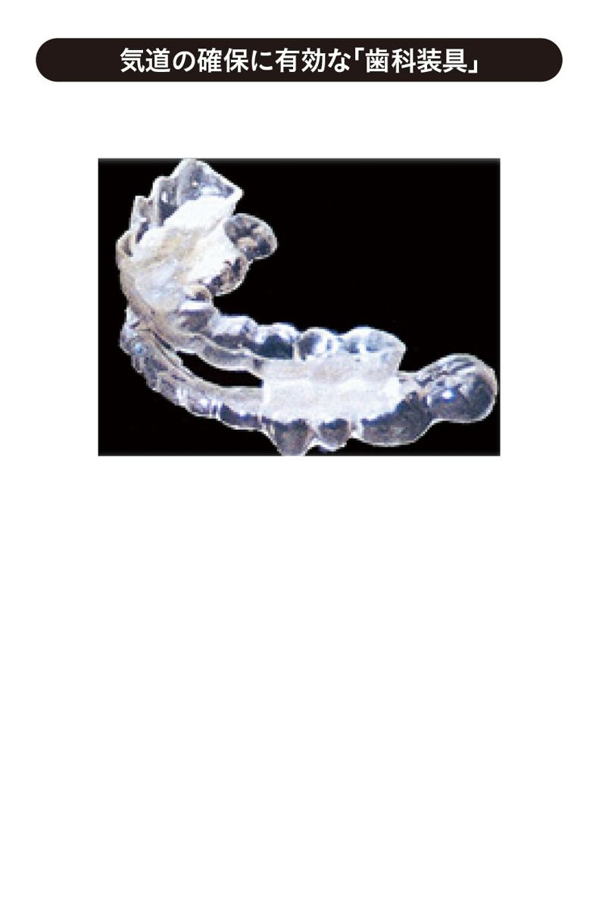
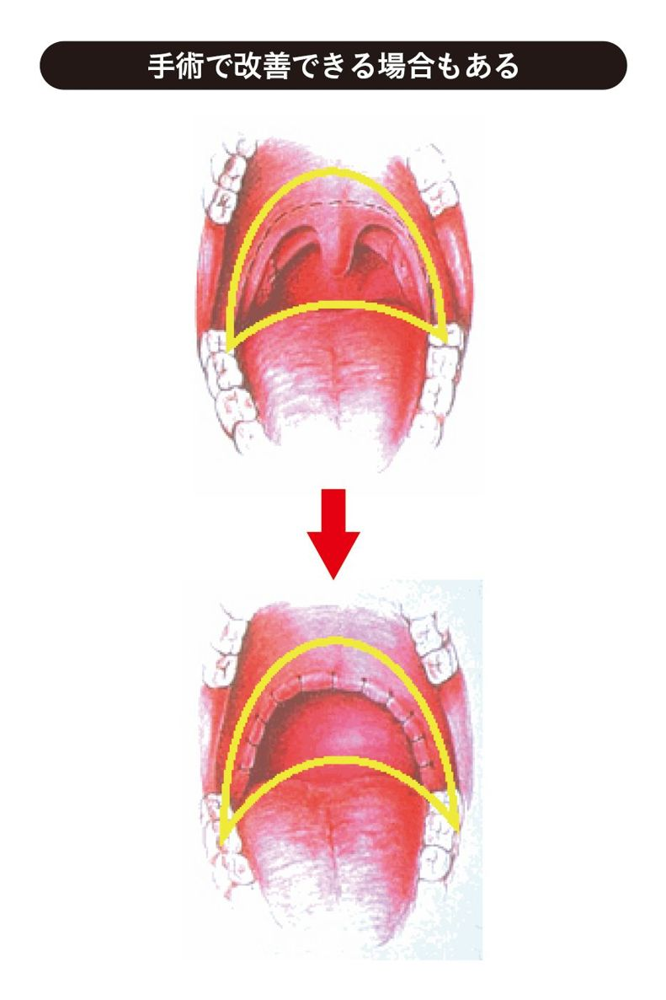

| 睡眠時無呼吸症候群 ほんとは怖い「いびき」の話 会議中・車中でうとうと 仕事に集中できない これは危険信号？！ (impress QuickBooks) | |
| 舛谷仁丸 | |
| (2014) | |
はじめに
新幹線の運転士によるオーバーラン、睡眠時無呼吸症候群（ＳＡＳ）患者さんの裁判など、最近では「睡眠時無呼吸症候群」の知名度もかなりＵＰしています。
しかし、世間の皆さんには正しく伝わっていないことも多く、そのためか、治療を受けている方が少なく、そして、病気やその治療に関して誤解をしている方がまだまだ多いというのが現状です。
例えば、睡眠時無呼吸症候群は、太っている中年男性で大きないびきをかく人がなりやすく、そうでない自分は大丈夫！ などの誤解です。このあと詳しく説明しますが、この病気は太った中年男性が眠気で困るだけの病気としてではなく、男性でも女性でも、太っていても、痩せていても起こる可能性があります。そして眠気だけではなく、さまざまな病気を引き起こす原因にもなりかねないことだってあるのです。
本書では、正しい知識、検査、治療方法などについて、お伝えしていきたいと思っています。
まず最初に！
「自分の普段の眠気が正常なレベル」なのか、「病的な疑いのある眠気」なのか、次の〈眠気のテスト〉を是非試してみてください。これは病院で実際に使用しているものです。
〈眠気のテスト〉
もし、次の状況になったとしたら、どのくらいうとうとする（数秒～数分眠ってしまう）と思いますか。最近の日常生活を思いうかべてお答えください。
このような状況になったことが実際になくても、その状況になればどうなるかを想像してお答え下さい（１～８の各項目で、◯は１つだけ）。
すべての項目にお答えしていただくことが大切です。

結果はいかがでしたか？ ８項目の点数を足してください。
０点～10点だった方は、「眠気は正常範囲」です。
11点～24点だった方は、要注意！「病的な眠気」があります。
特に16点以上だった方は、かなり重度の眠気があると判断されます。
なお、眠気の感じ方は人それぞれです。この眠気のテストだけで判断せずに、次に挙げる症状がある方は睡眠時無呼吸症候群の疑いがあるため、専門医を受診することをお勧めします。
・習慣性で、「迷惑な大きないびき」や「いびきが止まる」と言われることが多い
・朝おきたときに頭痛や頭が重い感じがある
・朝おきたときに良く眠れた感じがしない
・朝おきたときに喉が痛かったり口の中の渇きがひどい
・寝ている途中で目が覚めることが多い
・夜中にトイレに行く回数が多い
ひとつ言える事は、この病気は正しい診断と治療を行えば、睡眠時無呼吸症候群に付随する眠気や合併症をコントロールできます。検査や治療は怖いことは何もありません。
本書で知識を得ていただき、睡眠時無呼吸症候群の早期発見や治療にお役立ていただければ幸いです。
目次
第１章 睡眠時無呼吸症候群とは
１‐１ いびきと睡眠時無呼吸症候群
いびきの生体に対する悪影響は、「池松武之亮いびき研究所」の創始者、故池松武之亮博士の多年の研究により世界で初めて明らかにされました。
いびきは決して豪傑ではすまされません。単純ないびき症の方の一部に「睡眠時無呼吸症候群」の方が、少なからず（日本の人口の２～４％）存在すると言われています。
１‐２ 睡眠時無呼吸症候群の定義
睡眠時無呼吸症候群（Sleep Apnea Syndrome‥ＳＡＳ）とは睡眠中に10秒以上呼吸が停止する無呼吸や、気道が狭くなり呼吸の出入りが少なくなる低呼吸が１時間あたり５回以上繰り返される病気です。
１‐３ 自覚症状は昼間の眠気、スッキリしない重苦しい朝
人間は睡眠中、全身の筋肉が緩みリラックスした状態となります。当然、顎や舌・のどちんこの周囲（軟口蓋）の筋肉も緊張が緩み、喉の下方へ下がり、その結果、鼻から咽頭までの道である「上気道」は狭くなります。もともと喉の構造が狭い方や肥満によって狭くなってしまった方は、更に狭くなります。特に、舌の根元（舌根部）や、のどちんこ（口蓋垂）・のどちんこの周囲（軟口蓋）の部分では空気の通る道がますます狭くなります。
それでも身体に必要な酸素を確保するため、狭くなった上気道に空気を無意識に吸い込もうとします。その狭くなった上気道では、呼吸抵抗がどんどん高くなり、粘膜を摩擦したり、振動したりしていびき音が発生します。
振動がひどければ大きないびきですね。
この大きないびきが更にひどくなると、振動するだけでなく、ついには空気の通り道がふさがってしまい、呼吸が一時的に止まる睡眠時無呼吸症候群となります。
また、鼻づまりが強い方は、口を開けて寝ることで、顎が下方に落ち込むために上気道が更に狭くなり、粘膜の摩擦もひどくなり、起きた時に喉の痛みを感じたり、天然の加湿器の役割を果たす鼻からの呼吸ではなく、口から直接呼吸するために、喉も乾燥してカラカラになりやすくなります。
１‐４ 睡眠時無呼吸症候群は怖い？
いびきがひどくなり、ついには空気の通り道がふさがってしまう状態が「無呼吸」、完全にはふさがらなくても、かなり狭くなって空気が通常の量の半分以下しか通れない状態を「低呼吸」といいます。この無呼吸や低呼吸により、本来必要な空気量が肺に入れなくなるので、心臓や脳をはじめ身体の中の酸素が欠乏します。これが高血圧や不整脈の原因となったり、重症になると心筋梗塞や脳梗塞などを引き起こす危険性が高くなり、突然死の重要な原因の一つとして報告されるようになりました。
また、睡眠時無呼吸症候群による眠気が、交通事故の危険性を高めたり日常生活での多くのミスの原因となることも報告されています。
第２章 いびきについて
２‐１ いびきの正体
人間の呼吸は、本来鼻から空気を吸い込み咽頭を通り肺に至ります。鼻から咽頭までの道（上気道）には、凹凸があり、そのため狭い場所もあり、睡眠中はここが更に狭くなりすぎると粘膜が振動するために音が発生します。
この音こそが、いびきの正体です。
試しに強く息を吸ったり、吐いたりしてみてください。普段は聞こえない寝息のような呼吸する音が聞こえませんか。睡眠中、スースー、スヤスヤと寝息を立てることがありますが、これらは自然な呼吸音で、この程度の音は、健康に支障はありません。
人間は呼吸の際、誰でもある程度の呼吸抵抗があるのですが、更にその抵抗が強くなるとスースーではなく、グーグー、ゴーゴーといった振動音が発生し、他人にも迷惑ないびきになります。
２‐２ いびきのメカニズム
なぜ上気道の抵抗が大きくなって「いびき」になってしまうのでしょう。
（１）睡眠状態になると気道の筋肉もリラックスして弛緩し、重力で下方に下がるため、のどちんこ（口蓋垂）や軟口蓋周囲、舌の根元が狭くなる。
（２）鼻つまりや習慣で口を開けて寝る。
仰向けの状態で口を開けると顎が下方に下がり、口蓋垂・軟口蓋・舌の根元の部分が更に狭くなりやすい。
もともとの骨格や上気道の構造が狭い場合や、肥満により舌の根元や上気道周囲に脂肪が蓄積して狭くなってしまった場合は、その狭い部分を空気が通るときに、更に狭くなり振動音が発生し、いびきになるのです。
ではなぜ、起きているときはいびきをかかないのでしょうか。
それは、起きている時は筋肉が緊張状態にあり、気道が広く保たれていて、空気抵抗が低く、空気の通りがスムーズであるため、振動音、つまりいびきをかかないのです。ただ、起きている時に意識的に大きな呼吸をすることでいびきの音が出せる方は、上気道のどこかに狭い場所がある可能性があります。
２‐３ いびきの起こるさまざまな原因
いびきの起こる原因は、上気道が構造的に狭い場合（生まれつき狭い場合や肥満に伴う上気道への脂肪沈着で狭くなった場合）や、そのほかの原因としては次のような上気道の炎症や充血、筋肉の弛緩（ゆるみ）などが理由として挙げられます。
（１）口を開けて寝る（顎が下方に下がって狭くなる）
（２）心身の疲労やストレス（筋肉が弛緩して狭くなる）
（３）加齢・老化・女性の更年期以降（筋肉が弛緩して狭くなる）
（４）飲酒、睡眠薬・精神安定剤などによる筋弛緩（筋肉が弛緩して狭くなる）
（５）鼻腔や咽喉・咽頭の異常（扁桃腺肥大、アデノイド肥大、小顎症、鼻中隔湾曲症など）
（６）肥満（上気道の周囲に脂肪がつき狭くなる）
（７）その他（甲状腺機能低下症など）
２‐４ 危険ないびきといろいろないびきの音
一般的にはいびきはあまり危険視はされていませんが、その中には極めて注意を要するものがあります。かなり大きないびき自体も心臓にかかる負担が大きい可能性があると報告されていますし、往復のいびき（吸うときも吐くときもいびきが聞こえる）や不規則ないびき（とても大きないびきや小さないびきを繰り返す）は、その負担が更に大きいと考えられます。
大きないびきの後に呼吸が止まる・止まりかけるいびきは、睡眠時無呼吸症候群の疑いが強く、心臓などへの負担が心配です。
眠っていても逆に疲労がかさむ事があったり、しっかり寝たと思ったのに、翌朝になっても疲れが取れていない......そう思われる方も要注意です。
ベッドパートナー（奥さんでも、恋人でも、友人でも同じ部屋で寝ている方）から、ひどいいびきや不規則ないびき、いびきの後に呼吸が止まっていると言われる方は、是非専門医の診察を受けてください。
２‐５ いびきは健康を害するさまざまな病気のもと!?
空気が出入りする上気道の抵抗が大きくなればなるほど、いびきの音はより大きく酷くなります。周囲に迷惑をかけるばかりでなく、健康に重大な影響を及ぼす睡眠時無呼吸症候群を引き起こしている可能性が高くなります。いびきをかくことは肺に入る空気の抵抗が大きい訳ですから、呼吸器の空気のフィルターが詰まっているのと同じことです。
その結果、肺に取り込まれる空気の量が少なくなるため、全身酸欠状態になります。
また、無呼吸症状は、一晩に何百回も引き起こされるので、寝ているつもりでもほとんど寝ていない状態、極度の睡眠不足の方と同じになってしまいます。
第３章 睡眠時無呼吸症候群の原因
３‐１ 上気道の閉塞
繰り返しになりますが、睡眠時無呼吸症候群は、上気道（空気の通り道）が閉塞することにより起こります。閉塞の原因は、もともとの構造が狭い、首周りの脂肪の沈着、扁桃腺肥大、アデノイド肥大、気道へ舌が落ち込む、舌が大きい（巨舌症）、鼻が曲がっているなどがあげられると説明したとおりです。
欧米人の睡眠時無呼吸症候群の患者さんは肥満している人が多いようですが、日本人は痩せていても睡眠時無呼吸症候群を発症する方も多いのです。
その原因として、顔面の骨格や顎の形状が関係していると言われています。欧米人に比べてもともと顎が小さく喉の構造が狭いだけでなく、近年食習慣の欧米化で固いものを噛むことが少なくなり、日本人の顎は昔に比べるとますます小さくなってきています。そのため痩せていても睡眠時無呼吸症候群を発症します。
固いものを食べなくなり、ファーストフード・ジャンクフードなどのやわらかい食べ物が増えてしまった現代の食習慣から考えると、睡眠時無呼吸症候群の患者さんは、これからも増えていくことが予想されています。その結果、子供の睡眠時無呼吸症候群も、当然これから増えてくる可能性があります。
こういった理由により、睡眠時無呼吸症候群の患者さんが太っていると思うのは間違いです。
また、一般的に男性に多い病気ではありますが、女性の方にも発症します。若い女性でも顎が小さい方や肥満がある方は要注意です。また、更年期以降になるとホルモンバランスの関係で喉の筋肉が男性並みに弛緩しやすくなり発症しやすくなると言われています。ただ、ご夫婦・カップルの場合、男性が先に寝てしまう事が多く、女性のいびきや無呼吸は気づかれにくいので要注意です。

３‐２ どのような症状がでるのでしょうか？
睡眠時無呼吸症候群はさまざまな自覚症状を伴います。
前述どおり、夜の睡眠がきっちりとれていないため、日中に眠くなるのは当然ですし、寝たつもりなのに疲れがとれない、勉強・仕事に集中できない、起床時の頭痛、熟睡感の欠如、中途覚醒（睡眠中に何度も起きる）、夜間の頻尿（寝ている間のトイレに起きる回数が多い）や、最近男性更年期として話題にもなっているＥＤ（インポテンツ）との関連も報告されています。
ただ、多くの患者さんを診療して思うのは、日本人、特に働き盛りのサラリーマンや主婦、学生の方、殆どの方が、慢性的な睡眠不足であり、そのため、睡眠時無呼吸症候群による睡眠障害の症状になかなか気がつかないケースが非常に多いのです。
電車で居眠りは当たり前、授業中に眠いのはみんながそう、退屈な会議や、面白くない映画などで眠いのは当たり前、自宅でくつろいでテレビを見ていたら、そのまんま居眠り......。
ある意味、日本人ほど眠気に寛容で、眠気と病気との関連を気づかない民族は少ないのかもしれません。
でも、その眠気......ほんとに睡眠不足によるものだけなのか、もう一度、周りの人からの意見も聞いてちゃんと考えてみる必要があると思います。
第４章 睡眠時無呼吸症候群が引き起こすさまざまな危険性
４‐１ 交通事故の危険性
睡眠時無呼吸症候群による日中の眠気は、当然、日常生活の一般的なミスだけでなく交通事故の危険性を高めます。無呼吸・低呼吸によって一晩中浅い眠りしかとれないため、運転中に睡魔に襲われることになるのです。
更に、重症な睡眠時無呼吸症候群の患者さんでは単なる眠気からの居眠りではなく、自分では眠気が無いと思っていても、目を開けたまま瞬間的に寝てしまう「マイクロスリープ」（自覚の無い瞬間的な居眠り）という恐ろしい現象を引き起こす事があります。この場合、危険な状況に瞬時に対応できないため、ノーブレーキで突っ込んだり、対向車線に知らない間に入ってしまうといった非常に重大な事故を引き起こしてしまう可能性があります。
ある報告では、重症の睡眠時無呼吸症候群の方は、飲酒で酩酊状態の方よりもハンドル操作ミスが高いと報告されています。道路交通法でも、治療によりコントロールされていない眠気を伴う疾患に罹患している方の免許を更新しない・剥奪するという措置がとられる可能性があります。また２０１３年の改正道路交通法では、事故を起こしたときの責任が従来より高く問われる事が決まりました。
このように、睡眠時無呼吸症候群は、本人の健康に影響するだけなく、交通事故や単純ミスによるトラブルで周囲の人達や社会生活を巻き込む危険性もはらんでいます。
でも！
でも！！
睡眠時無呼吸症候群はしっかり治療をしてコントロールすれば、眠気はほぼ消失し、身体への影響も防げます。
事故を防止するためにも、専門施設を受診するようにしましょう。
４‐２ 生活習慣病との関係
睡眠時無呼吸症候群が睡眠の邪魔を頻回にすることで、昼間の眠気やそれによる様々な症状に関係することはわかって頂けたと思います。更に、睡眠時無呼吸症候群は単に「眠い病気」というだけではなく、様々な生活習慣病との関係も相次いで報告されています。詳細はこのあとお話します。
４‐３ メタボリックシンドロームとの関係
生活習慣病は、以前は成人病とも呼ばれていましたが、特に近年それを未然に防ぐために提唱されているのが『メタボリックシンドローム』（いわゆる「メタボ」）です。
メタボって聞いたことありますよね。
でも、メタボって今さらですけど、なんなのでしょう。
メタボ・『メタボリックシンドローム』とは、肥満に伴い、皮下脂肪ではなく内蔵の周囲の脂肪、いわゆる内臓脂肪の過剰な蓄積が原因で、動脈硬化などの抑制に働くホルモン（アディポネクチン）の分泌が減り、その結果高血圧や高血糖、高脂血症が発生し、動脈硬化による心筋梗塞や脳梗塞などのリスクが高まる状態のことです。
その因子とされている血糖値・コレステロール値などは、過去15年の間に男女とも上昇しています。肥満の結果、内臓脂肪が増えると血糖値を下げるホルモン（インスリン）も効かなくなり糖尿病のリスクも上昇します。
当然、メタボリックシンドロームの方、その予備軍の方は、肥満に伴い空気の通り道（上気道）の周囲にも脂肪が沈着するため、睡眠時無呼吸症候群のリスクも併せて高まります。
単純に、睡眠時無呼吸症候群が肥満に伴って発症するだけでなく、睡眠時無呼吸症候群が様々な生活習慣病の原因や悪化因子となることも見逃せません。
４‐４ 高血圧症との関係
睡眠時無呼吸症候群の方は中高年の方が多く、肥満＝高血圧だから、必然と高血圧を合併するのでは？ と思うかもしれませんが、実は、本当の原因はそこだけではないのです。
同じ体重で健康な人と睡眠時無呼吸症候群の人を比較した研究では、睡眠時無呼吸症候群の患者さんのほうが２倍高血圧になりやすいというデータがあります。
つまり、睡眠時無呼吸症候群は高血圧の起爆剤なのです。睡眠時無呼吸症候群を発病することにより、さらに高血圧まで引き起こす可能性があるのです。
高血圧は原因がはっきりわかっている「二次性高血圧」と、原因があいまいな「本態性高血圧」に分けることができます。内訳は95％は本態性高血圧で、残りは二次性高血圧と言われています。
それでは、その95％の患者さんの中にどの程度、睡眠時無呼吸症候群の患者さんが紛れ込んでいるのでしょうか。
とある研究データによると、本態性高血圧の患者さんが睡眠時無呼吸症候群を合併する比率は、約30～60％といわれています。
現在、本態性高血圧と診断されていても、もしかしたらその方々は、睡眠時無呼吸症候群が原因で高血圧になっているのかもしれません。つまり、原因が特定でき、睡眠時無呼吸症候群の治療を行えば、血圧はコントロール出来るかもしれないのです。
では逆に、治療を行っていない睡眠時無呼吸症候群の患者さんの中にどの程度の方が高血圧を合併しているのでしょうか。これについてもデータがあります。
睡眠時無呼吸症候群の患者さんの50～90％の方に高血圧を合併するといわれています。
どうして睡眠時無呼吸症候群が高血圧を引き起こすのでしょうか。
その原因として、
（１）夜間の低酸素血症や中途覚醒（無呼吸のたびに苦しくて脳が目覚めてしまう現象）により交感神経が興奮する。
心臓がばくばくするのを自覚することもありますが、自覚症状がない場合もあります。
（２）気道が閉塞するためにあえいだ状態になり、胸の中が陰圧になり静脈の血流が多くなる。
などがあげられます。さらに、他の高血圧の悪化因子が加わるともっと症状が悪くなるのです。
しかし、睡眠時無呼吸症候群を治療すると血圧の状態も良くなり、お薬を減量・中止できる事もあります。現在、高血圧で降圧剤を飲まれている方、特に２種類以上の降圧剤を服用されている方、降圧剤を服用してるのに血圧が良くならないという方は、高血圧の後ろに睡眠時無呼吸症候群が隠れている可能性があります。
専門の医療機関にかかり、一度検査をされることをお勧めします。
４‐５ 心疾患との関係
睡眠時無呼吸症候群は、心疾患の危険因子であると言われています。
健康な方と比べて睡眠時無呼吸症候群の患者さんが心疾患を発症する可能性は、１・２～６・９倍とのデータが出ています。ですので、睡眠時無呼吸症候群＋心疾患となることで、ますます生命に危険を及ぼすことが示唆されています。
狭心症を患っている方のなかで約40％の方が睡眠時無呼吸症候群を合併しているとのデータがあるとともに、睡眠時無呼吸症候群の患者さんが心疾患を合併している割合は30～40％とも言われています。
よって、睡眠時無呼吸症候群と心疾患は関係が深く悪影響を与えるということになります。
ある研究では、未治療で重症の睡眠時無呼吸症候群の患者さんと、治療法のひとつであるＣＰＡＰ治療を実施中の睡眠時無呼吸症候群の患者さんとを比較したとき、未治療の睡眠時無呼吸症候群の患者さんの方が、圧倒的に致命的な心疾患を起こしているという結果も出ています。
高血圧同様、心疾患においても適切な治療を行えば危険を回避できる可能性があるのです。
４‐６ 糖尿病との関係
睡眠時無呼吸症候群の患者さんの中には糖尿病の方がとても多い事がわかっています。しかし、糖尿病の治療を受けられている方でも、ご自分が睡眠時無呼吸症候群かもしれないと気づく方はまだまだ少ないのが現状です。糖尿病の教育入院中に、寝ている時のいびきや無呼吸の状態から医療者が気づき、治療を始められる方もいらっしゃいます。
糖尿病の中でも２型の糖尿病と睡眠時無呼吸症候群との関係は、最近の大規模な研究で明らかになりました。
２５００人以上の地域住人を調査した結果、年齢、性別、喫煙、肥満度という、糖尿病に関係しそうな事柄を除いても、睡眠時無呼吸症候群は糖尿病を引き起こしやすいという結果がでました。
つまり、睡眠時無呼吸症候群の患者さんは肥満している方が多いから、糖尿病も多く合併しているのではなく、無呼吸による低酸素状態や脳の覚醒などによって、糖尿病を発症させたり、悪化させる可能性があるということです。
睡眠時無呼吸症候群が主な原因の糖尿病であれば、睡眠時無呼吸症候群を治療することで、糖尿病をうまくコントロールできる可能性があります。
４‐７ 脳卒中との関係
脳卒中は、昭和26年から昭和55年までの約30年間、日本の死亡原因の１位を占めていました。
現在では死亡率は減少していますが、脳卒中のなかでも脳出血よりも脳梗塞の割合が増え、後遺症などを抱えた患者さんがむしろ増加傾向にあります。発症後はリハビリの必要などがあり、生活の質（ＱＯＬ）が下がる病気です。読売ジャイアンツ終身名誉監督の長嶋茂雄さんも、脳梗塞による後遺症で長期のリハビリをされていますよね。
睡眠時無呼吸症候群と脳卒中はどのように関係しているのでしょうか。
重症の睡眠時無呼吸症候群の患者さんの夜間の脳の血流量は、健康な人と比べて、半分とのデータがあります。これは睡眠時無呼吸症候群の患者さんが脳梗塞を起こしやすい状況にあるということです。
また、睡眠時無呼吸症候群の状態になると血液の凝集能が高く（つまり、血液がどろどろしていて固まりやすい状態）、脳血管が詰まりやすい状況にも置かれています。
ある報告によると、睡眠時無呼吸症候群を治療していない方は、脳卒中になる危険率が健康な方と比較し約10・８倍であると言われています。
睡眠時無呼吸症候群の患者さんの多くは高血圧、心臓病、糖尿病、脳卒中などの生活習慣病を合併しています。放置すると生命に影響を及ぼすことがあります。最近では肥満、糖尿病、高血圧、高脂血症の「死の四重奏」に「睡眠時無呼吸症候群」を加え、「死の五重奏」と言われることもあります。それほど睡眠時無呼吸症候群は生命に関係している病気です。しかし、睡眠時無呼吸症候群を治療することで「四重奏」を軽減できたり、予防することもできます。当院の患者さんの中でも、睡眠時無呼吸症候群を治療することで高血圧のお薬を減量できた方や、体重の減量に成功し生活習慣病が改善された方もいらっしゃいます。そのためにも、適切な検査を行い、ご本人にあった治療を行うことが大切です。
第５章 睡眠時無呼吸症候群の検査と治療法
これまでお話してきましたように、さまざまな合併症を引き起こす原因となったりし、危険を伴う無呼吸症候群ですが、治療で改善することが可能です。その検査方法と治療法についてこれから説明します。
５‐１ 終夜睡眠ポリグラフ検査（ＰＳＧ検査）について
「睡眠ポリグラフ検査」とは、夜間どのような睡眠をとっているのかを全体的に診る検査です。
睡眠時無呼吸症候群を含めて、睡眠障害を正確に診断するためには睡眠ポリグラフ検査が必要です。
最近では、脳波を検査せずに睡眠中の呼吸の状態などを検査する簡易診断法も行われますが、この方法では最も肝心な睡眠の状態が検査できません。つまり寝ているのか、起きているのか、また寝ていたとしてもよく寝られているのか（深い睡眠が得られているか）、睡眠状態が悪いのか（浅い睡眠ばかりで、途中に何回も短時間の覚醒が起こっている事があります）は、脳波を含めた睡眠ポリグラフ検査でしかわかりません。
脳波、眼球運電図、筋電図、呼吸活動、心電図、酸素濃度、いびきの音などを夜間記録します。この検査で眠りの深さの判定、不眠症や過眠症、不整脈、足の筋肉のピクピク発作などがわかります。
検査は頭、目、耳の後ろ、あご、胸、お腹、足にバンドや電極をつけます。少し煩わしいと思いますが痛みはありません。
電極をとりつけるので眠れないのではないかと思われるかも知れませんが、実際にはほとんどの人が眠っており、検査に支障のある人は稀です。快適に眠れるように睡眠検査室は全室個室で個別に温度調節ができます。
５‐２ 治療について
まず、無呼吸を指摘されたり、睡眠時無呼吸症候群の疑いがある場合は、専門医療機関などで受診しましょう。
問診時に睡眠、自覚症状について質問をし、その後の検査方法を決定します。
睡眠時無呼吸症候群が疑われる場合は、夜間の状態を診るため、基本的には夜間の睡眠時の状態を入院してもらい検査をします。
〈受診について〉
もし、他人やベッドパートナーからいびきや呼吸の停止を指摘されたら受診をするようにしましょう。また、夜寝ているときの様子はご自分ではわからないので可能であればベッドパートナーに同席してもらうのがよいでしょう。
問診では、自覚症状、生活習慣や合併症、交通事故やニアミス経験などについてお聞きします。また、現在服用しているお薬についてもお聞きしますので、持参されるとよいでしょう。
眠気は客観的に判断するためにアンケートが多く用いられています。
５‐３ 治療のメリットについて
まず、治療するとどのようなメリットがあるのでしょうか。
基本的には、２点あります。
１点目は、睡眠中の無呼吸によって分断された睡眠がもたらす日中の眠気が改善し、仕事の効率が上がる、ミスが減る、交通事故等のリスクが減る、元気になる、という事です。ただ、眠気の自覚は個人差が大きく、ひどい無呼吸があっても眠気は感じないという方もおられますし、また治療後にその変化に気づかれる方も多いのです。
２点目は、睡眠時無呼吸症候群によって起こりうる、医学的な問題を避けられる可能性があります。具体的には高血圧、狭心症、心筋梗塞、脳梗塞などのリスクを減らすことが出来るのです。つまり眠気の自覚症状のない方でも、医学的には治療する事に大きな意味があります。そのためご自身の無呼吸がどの程度なのか主治医の先生によくお聞きになり、治療法を考える必要があります。
それでは、次に睡眠時無呼吸症候群と言われた方へ具体的な治療法を解説いたします。
５‐４ 治療法について
〈どちら向きで寝るか？〉
まず、睡眠中の体位の工夫を考えましょう。仰向けで寝ると重力の関係で舌や軟口蓋が下向きに下がり、上部気道を塞ぎます。これが睡眠時無呼吸症候群の原因です。そのため、横向きに寝ると症状がよくなる可能性があります。
ただ、全ての方に有効であるわけではなく（軽症の方でも効果がないことがあります）、横向きに寝ることが効果があるかは検査の時に判定されますので、主治医に確認することが必要です。
それでは横向きに寝るにはどうすればよいでしょうか？
寝るときには自分で横向きに寝ていても、知らずに仰向けになってしまいます。そこで、枕に傾斜をつけてみたり、パジャマの背中に丸めたタオルを縫い込んだり、テニスボールを縫い付けたりします。そうすることで仰向けになると刺激があり、自然に横向きに戻るようにします。
〈体重コントロール〉
やはり、睡眠時無呼吸症候群の方の中には肥満が発病の原因になっている方が多くいます。殆どが肥満ですが、急激な体重の増加が一部の原因となっている場合があります。
このような方の場合は減量が有効です。
「じゃあ、診断されたらまず減量!?」
「中等症以上の睡眠時無呼吸症候群の場合、まず減量すれば良い？」
中等症以上の睡眠時無呼吸症候群と診断された場合、肥満の原因が睡眠時無呼吸症候群である場合もあります。その場合は、減量自体の成功率が低くなる可能性が高くなります。やはり睡眠時無呼吸症候群の治療を先にしないと減量は困難であるばかりか、大変なリスクを伴いますので、減量に取り組む前に主治医の先生とよく相談してください。
睡眠時無呼吸症候群の症状などの改善の効果が出る目安は体重の５～10％です。あせらず、ゆっくり減量に取り組みましょう。
また、食事制限のみの減量は、脂肪の減少に結びつかず効果が現れにくいので、ジョギング・ウォーキングなどのエアロビクス系の運動で脂肪燃焼効果を高めたり、筋トレで筋肉量を増やすことで基礎代謝を上げて太りにくい体質に変えていくことも併せて行うこともお勧めします。
〈生活習慣を見直しましょう〉
寝る前のアルコールは筋肉をより緩める働きがあるため、避けましょう。少なくとも睡眠前３～４時間までを目安にして下さい。
他に睡眠薬や精神安定剤も同様ですので、主治医に相談してください。
タバコも気道粘膜に刺激を与え粘膜が腫れていびきが出やすく、無呼吸を悪化させる事があります。睡眠時無呼吸症候群を治療する中で、ご自身の食事、運動、アルコール、内服薬、タバコ等を見直し、これをきっかけに本当の健康を手に入れましょう。
〈ＣＰＡＰ療法〉
ＣＰＡＰ（経鼻的持続陽圧呼吸療法装置）を用いた治療は、一定圧を加えた空気を鼻からマスクを通じて送り込むことによって、上気道の閉塞を取り除き、睡眠中の気道を確保する非常に有効な治療法です。
ほとんど全ての睡眠時無呼吸症候群の患者さんに有効で、中等症以上と診断された患者さんへの治療の第一選択とされています。

〈歯科装具〉
歯科装具を睡眠中に装着し、舌や下あごを前方に固定することで、舌の後方の気道スペースを広げ気道の閉塞を防ぎます。
歯科装具は睡眠障害の専門医と連携を持つ経験豊富な歯科医師によって、患者さん個々に作製してもらうことが必要です。

〈耳鼻咽喉科での外科手術〉
子供の睡眠時無呼吸症候群の場合は、アデノイドや扁桃の肥大が原因であることが多く、手術が第一の選択になります。
また、大人の場合でも、気道閉塞の原因がアデノイドや扁桃の肥大であると明らかな場合は手術での改善が期待できます。ただ、気道閉塞の原因部位の多くは、現状の手術での改善は期待できず、手術での根治はできない方が多いのも現実です。
今後、下顎骨の前方移動術などの新しい手術療法の適応・安全性・有効性の確立が期待されます。

第６章 ＣＰＡＰ治療について
現在、中等症以上の睡眠時無呼吸症候群の方の治療の第一選択は、ＣＰＡＰ（経鼻的持続陽圧呼吸療法装置）療法です。
ＣＰＡＰの使用によって、最初の日から劇的に睡眠の質が改善し、はっきりとその効果を実感できる方がおられますが、その効果の実感に数週間から数ヶ月かかる場合もあります。
また、重症の睡眠時無呼吸症候群であっても元々の眠気の自覚があまりない場合は、使用の効果を実感できない場合もあります。
それでもＣＰＡＰ治療の目的は、単に眠気をとるためだけではありません。中等症以上の睡眠時無呼吸症候群の方は、循環器系の合併症（高血圧・心筋梗塞・脳卒中など）の頻度が多く、最近では糖尿病やメタボリックシンドロームとの関連も示唆されています。ＣＰＡＰの使用は、そのリスクを軽減できる事が報告されています。
ＰＳＧ検査の結果、ＣＰＡＰ治療が必要だと診断された場合、現時点で重要なのは、ＣＰＡＰを継続使用することです。
実際、残念ながら１００％の方が、ＣＰＡＰを継続使用できているわけではありません。ＣＰＡＰの継続率については、多くの報告があります。50％から70％との報告が多いようです。（当院をはじめ専門医療機関の多くではＣＰＡＰ継続率は約80％以上です。）
継続してＣＰＡＰを使うためには、トラブルや初期の対応が重要です。ＣＰＡＰを数ヶ月使用していると、その効果で睡眠時無呼吸症候群そのものが治療できてＣＰＡＰ使用を中止できるのでは、と考えてしまう患者さんもおられます。
残念ながら、ＣＰＡＰは根本的に睡眠時無呼吸症候群を治療する装置ではありません。睡眠中の上気道の閉塞を空気による陽圧をかけることによって改善させるだけの装置です。無呼吸が睡眠だけではなく、循環器系への悪影響を示している睡眠時無呼吸症候群と診断された場合、やはりＣＰＡＰを継続的に使用する事が一番大事です。
もちろん、睡眠時無呼吸症候群の原因として体重増加が大きな因子と考えられる方の場合は、減量でも改善が期待できます。ただし、骨格による上気道が狭い影響が、睡眠時無呼吸症候群を引き起こす大きな要素となっている場合は、減量の効果は限定的です。
中等症以上の睡眠時無呼吸症候群と診断された場合は、扁桃肥大やアデノイドが無呼吸の主な原因と考える場合以外は、手術での根治は難しいと思います。
その場合は、効果が高く副作用の少ない新たな治療法（手術療法を含む）が将来開発されるまで、ＣＰＡＰを継続的に使用するのが、現時点では賢明だと思います。
なんのためにＣＰＡＰが必要なのか、なんのために毎日ＣＰＡＰを使っているのか、それを見直すこともとても大事なことです。正しくＣＰＡＰを使用して、すっきりした朝を迎える事が出来ることを含めて、少しでもサポートできれば、と願っています。
第７章 先生に聞きたい！ よくある質問
普段から患者のみなさんに多く寄せられる質問をまとめてみました。
〈病気の症状についてのＱ＆Ａ〉
Ｑ いびきがひどく、眠気も強く、居眠り運転で事故を起こしたこともあります。睡眠時無呼吸症候群でしょうか。
Ａ 睡眠時無呼吸症候群を強く疑います。睡眠時無呼吸症候群の専門医療機関を受診することをお勧めします。
Ｑ いびきはかきますが、呼吸は止まっていないようです。睡眠時無呼吸症候群でしょうか。
Ａ 単純いびき症かもしれませんが、日中の眠気、自覚などがあれば、睡眠時無呼吸症候群の専門医療機関の受診をお勧めします。
Ｑ やせているのですが睡眠時に呼吸が止まっていると言われます。睡眠時無呼吸症候群は肥満者がなる病気と聞きましたが、私もそうなのでしょうか。
Ａ 睡眠時無呼吸症候群＝肥満ではありません。顎が小さい、顎が後退しているということで睡眠時無呼吸になることがあります。とくに日本人は、やせているのに無呼吸がある方は顎の骨格が原因の方が多いです。
Ｑ 自分は睡眠時無呼吸症候群のようですが、眠気もそんなに感じません。放置してもよいでしょうか。
Ａ 睡眠時無呼吸症候群には深刻な合併症を併発していることが多く、放置するとよくない場合があります。一度受診して、検査を受けられることをお勧めします。
Ｑ 無呼吸が多いことを指摘されました。このまま睡眠時に呼吸が止まって死んでしまうのではないかと思い心配です。
Ａ 睡眠時無呼吸症候群の無呼吸状態がそのまま続き、窒息死してしまうことはほとんどないと思われます。ただし、睡眠中の無呼吸で著明な低酸素状態がおき、それが致死的な不整脈や脳卒中・心臓病を引き起こす可能性はあり得ます。また、眠気を放置すると交通事故や労働災害などにもつながりますので、深刻な状況になるまえに専門医療機関を受診されることをお勧めします。
Ｑ 夜寝ていて苦しく窒息感を感じ突然起きることがあります。睡眠時無呼吸症候群かもしれないと思うのですが、検査を受けたほうがよいでしょうか。
Ａ 睡眠時の窒息感は睡眠時無呼吸症候群を疑う症状のひとつです。睡眠時無呼吸症候群の疑いはあると思われます。もし、いびきが不規則であったり、時に止まるようであれば、疑いは濃厚です。日中の眠気の自覚、肥満傾向（体重増加）、高血圧の指摘などがあれば、尚更です。専門医療機関を受診されることをお勧めします。
Ｑ 子どもの無呼吸についてですが、毎日５秒以上の無呼吸が何回もあります。寝ている様子を見るとかなり苦しそうで、かなり大きないびきもかいています。子どもの成長になにか影響はありますか？
Ａ 子どもの無呼吸は、成長・発達や、学習など多くの影響がありますので、早めに検査されることをお勧めします。またその原因として扁桃腺肥大やアデノイドが原因のことが多いので、まず耳鼻科での診察をお勧めします。またその後手術適応を考えるに当たって睡眠検査を受けることが望ましいと思います。小児の睡眠検査を実施している医療機関にお問い合わせすることをお薦めします。
〈治療についてのＱ＆Ａ〉
Ｑ 薬で治せないのでしょうか。
Ａ 残念ながら、現在のところ中等症以上の閉塞型の睡眠時無呼吸症候群に確実に効く薬剤はありません。
Ｑ 手術では治せないのでしょうか。
Ａ 手術で治る場合もあります。しかし、すべての睡眠時無呼吸症候群の患者さんが適応になるわけではありません。手術を希望される場合は、主治医にご相談ください。
Ｑ ＣＰＡＰ以外に治療法はあるのでしょうか？
Ａ 歯科的治療（マウスピース）、外科的手術による療法などがありますが、主治医が患者さんにあった治療法を選択しますので、安心して現在の治療をお続けください。他の治療法を行いたい場合は、一度かかりつけの主治医にご相談ください。
Ｑ マウスピースに保険がきくと聞いたのですが、実際に費用等はどのようなものなのでしょうか。またもしマウスピースを作ってもらいたい時は、睡眠ポリグラフの検査をマウスピース装着前と装着後に行うのでしょうか。
Ａ ２００４年４月１日から健康保険が適応されました。睡眠ポリグラフ検査で睡眠時無呼吸症候群と診断されていること、診断された医療機関から歯科医へ診療情報提供書（紹介状）を発行してもらうことなどが条件です。費用は、３割負担の方で自己負担は１５０００円前後のようです。
〈診療施設について〉
Ｑ どの医療機関へかかれば診てもらえますか？
Ａ 専門的に睡眠時無呼吸症候群の診療を行っている医療機関への受診をお薦めします。以下のページに主な全国診療施設の一覧を掲載していますので参照ください。
http://www.sleep.or.jp/facility/index.html
Ｑ 引越し・転勤等するのですが、転居先でも診ていただける医療機関はありますか？
Ａ 転院可能な医療機関を探す必要がありますが、多くの場合は転院可能ですので、主治医にご相談ください。
おわりに
本書を最後まで読んで頂き有難うございました。
呼吸器内科専門医として、肺がんや間質性肺炎、重症の呼吸不全を診療してきた診療経験の中、ある時に、「居眠りで困っている社員が社長の面談でも居眠りした、もしかして睡眠時無呼吸症候群ではないか？」と外来に紹介されました。その方は、私の外来の待合室でも、検査中にも、居眠りされていて看護師たちも驚いていたのですが、その方が重症の睡眠時無呼吸症候群であることを診断することができ、そして治療でその症状が劇的に改善したことがきっかけで、この病気を専門的に診療したいと思い、紆余曲折を経てそして今に至ります。
たかがいびき、されどいびき、たかが眠気、でもその眠気は......
日本人が当たり前と思っていた居眠りやいびきが、実は重大な合併症を引き起こす睡眠時無呼吸症候群のサインの可能性があるのです。
その事を知って頂けたり、気がついて頂けただけでも、本書を読んで貰って良かったと思います。
自分自身だけでなく、家族や友人・知人、多くの方がこの病気である可能性があります。その知識を本書で得て、これからそれを活かして頂ければ、著者として本当に嬉しい限りです。
舛谷仁丸（ますたにひとまる）
略歴
日本睡眠学会認定医療機関 医療法人ますたに呼吸器クリニック・大阪天満橋睡眠呼吸障害センター理事長
http://www.osaka-sleep.com/
日本内科学会認定医・日本呼吸器学会専門医・日本睡眠学会認定医
１９８６年和歌山県立医科大学卒、大阪大学医学部付属病院第３内科入局。
大阪府立成人病センター、大阪府立呼吸器アレルギーセンター、ＮＴＴ西日本大阪病院、大阪回生病院睡眠医療センターなどで勤務。
呼吸器疾患の専門医として肺がん、慢性呼吸不全の病態生理、非侵襲的人工呼吸などの呼吸管理の臨床研究に従事。
臨床の現場で睡眠時無呼吸症候群と出会い、その重要性と診療体制の不備を痛感し、２００１年関西で初の睡眠時無呼吸症候群専門の有床診療所、ますたに呼吸器クリニック・大阪天満橋睡眠呼吸障害センター開設。
開設後12年が経過し、その間に１００００件以上のＰＳＧ検査を行い、関西の睡眠時無呼吸症候群診療のパイオニアの１人である。
睡眠時無呼吸症候群を診療するようになって、日々の有酸素運動や加圧トレーニング、ストレッチ、食事コントロールなどを欠かさないようになり、今でも10代と同じ体重・体脂肪率をしっかり維持している。今では自他ともに認める健康オタクでもある。

●おなかを凹ませたい？腹筋運動なんかやめちまえ！／森拓郎
フィットネストレーナーの正しくお腹を凹ませる方法
●〝水泳〟を習わなくても本当は誰でも泳げる 心拍数が上がらない楽な泳ぎで水泳を生涯スポーツにする方法／花村育彦
自分の将来を守るため、著者がくだしたある決断とは？
●運動指導者が断言！ダイエットは運動1割・食事9割／森拓郎
ダイエット成功者は運動ではなく食事で痩せている！
●究極のデトックス ファスティングダイエット スポーツトレーナーが伝授する、2週間でカラダが生まれ変わる断食術／藤原茜
そのダイエット法、間違っています！
●水泳で一番カンタンなのはバタフライ うがいができればバタフライはできるんです！／花村育彦
うがいができればバタフライはできるんです！
●お坊さんも悩んでます。自分の「ご都合」と上手に付き合う43のヒント／名取芳彦
読むだけでほっと心が穏やかになる43のヒント
●苦手意識をなくす魔法の12ヶ条で「勝てるプレゼンター」になれる教科書／藤木俊明
上手いプレゼンよりも伝わるプレゼンターを目指せ
●こんなに頑張ってるのにうまくいかない!!と思ったら読む本 １日１回のひと言で人生が劇的に変わるカンタン心理術／小笠原昭治
人間関係の悩みを解決するヒントがここに詰まってます
●泌尿器科医が教える正しい「マスターベーション」 カップル、夫婦、家族で考えよう！自分の種と子孫を絶やさないためのムスコ運用法／小堀善友
学校では教えてくれない性教育
●「お尻のお悩み解消法」 恥ずかしくない！正しい肛門科のかかり方／赤城一成
お尻に違和感?!大腸肛門科に行く前に読む本